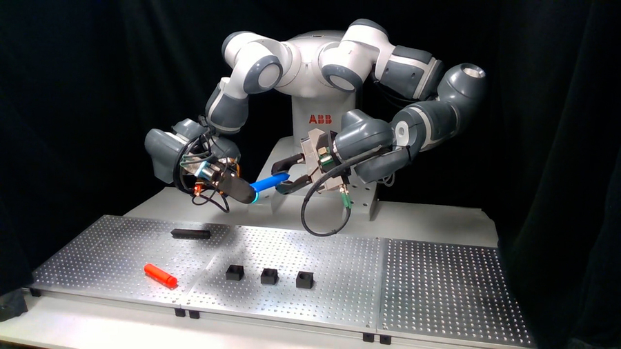
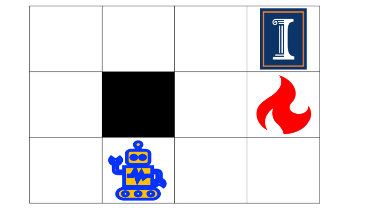
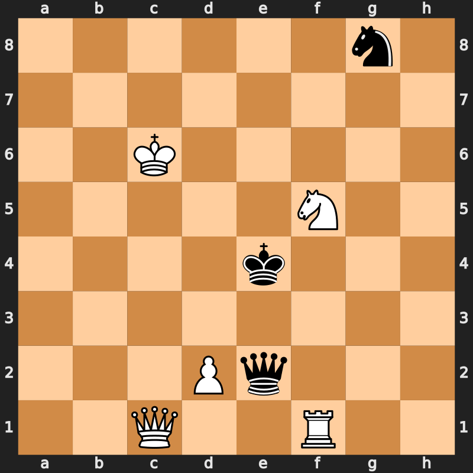
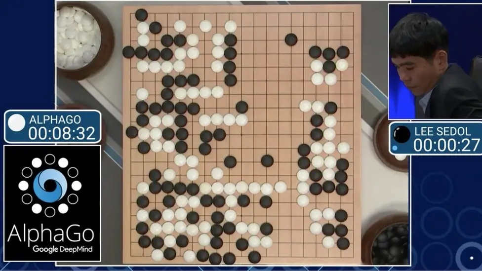
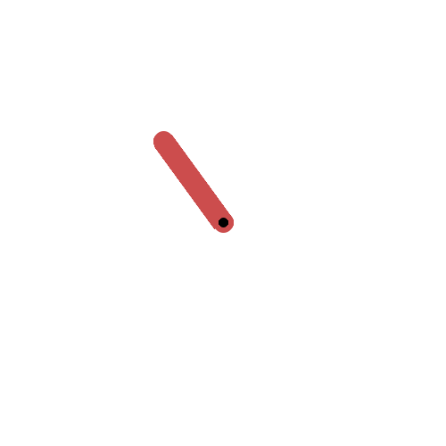
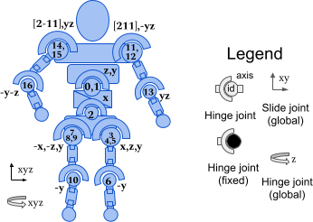
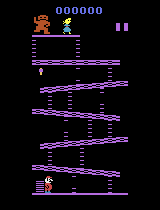
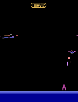
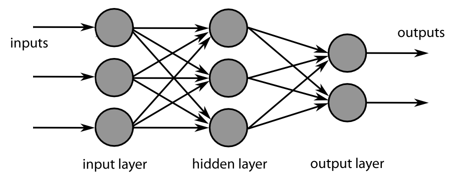
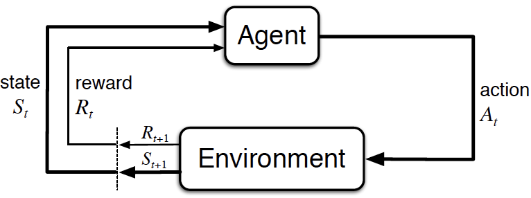

Deep Reinforcement Learning
Introduction
Prof. Dr. Sebastian Peitz
Chair of Safe Autonomous Systems, TU Dortmund
Summer term 2026
Who am I?
- Prof. Dr. Sebastian Peitz
- Chair of Safe Autonomous Systems
- JvF25, Room 124
- https://sas.cs.tu-dortmund.de/
The team
- Lecture: Sebastian Peitz
- Exercise: Konstantin Sonntag
- Additional team members working on the exercises
- Jannis Becktepe
- Septimus Boshoff
- Hans Harder
- Christian Mugisho Zagabe
- Stefan Weigand
Contents of the Lecture
Sequential decision making: Taking actions that affect our environment

Option 1: Rule-based system
- manual design of actions, given some sensor input (such as a camera)
Option 2: Model-based control
- given some model of the dynamics, optimize for the best possible action to take
Option 3: Imitation learning
- collect data from experts and try to clone the behavior
Option 4: Reinforcement learning
- collect data in a trial-and-error fashion, improve via feedback
What is reinforcement learning?
In words
- An agent perceives the state \(s\) of its environment.
- It takes an action \(a\) according to a policy \(\pi(a|s)\).
- The environment changes due to the action: \(s \rightarrow s'\).
- The agent receives a reward \(r\).
The goal
find a policy that maximizes the sum of future rewards!
Reinforcement learning examples (1)

- Environment: The grid world
- Agent: The robot
- State \(s\): The robot’s position
- Action \(a\): Move left / right / up / down
- Dynamics \(p(s'|s,a)\): The robot’s new position…
- …deterministically, if the robot does exactly what the action demands
- …stochastically, if there is some noise in the taken action
- Reward: \[r=\begin{cases} +1 & \text{if you reach the target field (top right)} \\ -1 & \text{if you hit the fire} \\ -0.1 & \text{otherwise} \end{cases}\]
- Policy \(\pi\): The strategy according to which you move
Reinforcement learning examples (2)

- Environment: The chess board
- Agent: The chess player(s)
- State \(s\): The board position
- Action \(a\): Move one of your figures
- Dynamics \(p(s'|s,a)\): The new board position…
- …after your own and your opponent’s moves \(\rightarrow\) your turn again
- …after your move; it’s the other players turn \(\rightarrow\) two-agent game
- Reward: \[r=\begin{cases} +1 & \text{if you take your opponent's king} \\ -1 & \text{if your king is taken} \\ 0 & \text{otherwise} \end{cases}\]
- Policy \(\pi\): The strategy with which you play

Reinforcement learning examples (3)

- Environment: A pendulum under gravitational force
- Agent: The control system trying to perform a swing-up
- State \(s\): \(\sin\) and \(\cos\) of the angle \(\varphi\) (top: \(\varphi=0\)) and angular velocity \(\omega = \frac{d\varphi}{dt}\)
- Action \(a\): the applied torque
- Dynamics \(p(s'|s,a)\): a differential equation describing the dynamics (Newtonian mechanics) \(\rightarrow\) deterministic system
- Reward: \(r=-(\varphi^2 + 0.1 \cdot \omega^2 + 0.001 \cdot a^2)\)
- Policy \(\pi\): the torque realizing the swing-up
Reinforcement learning examples (4)
 Humanoid [Source]
Humanoid [Source]

- Environment: A robot moving on a planar ground
- Agent: The control system for actuating the robot
- State \(s\): Positions and velocities of the components (45 in total)
- Action \(a\): The torques applied to the 17 joints
- Dynamics \(p(s'|s,a)\): a differential equation describing the dynamics (Newtonian mechanics) \(\rightarrow\) deterministic system
- Reward: healthy reward + forward reward - control cost - contact cost
- Policy \(\pi\): Run as far as you can!
Reinforcement learning examples (5)


- Environment: Atari video games
- Agent: The “player”
- State \(s\): the pixels of the screen
- Action \(a\): the game pad (i.e., moving, firing, etc.)
- Dynamics \(p(s'|s,a)\): the video game reacting to the player’s actions
- Reward: achieving the game’s goals (stay alive, reach a target, eliminate opponents, …)
- Policy \(\pi\): play such that you achieve your goal as best as possible

{kind=link}
{kind=link}
The two central tasks in RL
In all chapters, we will distinguish between two core learning tasks in reinforcement learning:
- The prediction problem (evaluation)
- For a fixed policy \(\pi\), we want to estimate the quality of a state \(s\) (i.e., its value).
- The control problem (improvement)
- We want to improve our policy \(\pi\) towards the optimal \(\pi^*\) that maximizes the value.
- This usually requires a back-and-forth between 1. and 2.
- Given our estimate of the value, we improve the policy: \(\pi' > \pi\).
- We then need to reiterate the values given the new policy \(\pi'\) and so on.
The key difference to supervised learning
- Supervised learning:
- minimize error on a training dataset \(\Dc=\{(x_1,y_1),\ldots,(x_K,y_k)\}\): \[ \min_\theta \sum_{k=1}^{K} \norm{y_k - f_\theta(x_k)}_2^2 \]
- data is generally drawn independently and identically distributed (i.i.d.): \[ (x_k,y_k)\sim p(\Dc). \]

- Reinforcement learning:
- no supervisor, just a reward signal
- feedback is delayed, not instantaneous
- time really matters (sequential, non i.i.d. data)
- agents actions affect the subsequent data it receives

The big questions
- How can we learn a good policy \(\pi\) from experience?
- How can we address the exploration-exploitation dilemma?
- How do we use deep learning to address otherwise intractable problems?
- Which techniques can we use to facilitate efficient and stable learning?
- What are interesting applications of RL?
- What are the open questions in RL research?
Goal of the lecture
By the end of the course, we will
- understand the theoretical basis behind RL
- know the landscape of RL algorithms as well as their pros and cons
- be able to implement RL algorithms (using python)
- be capable to critically assess scientific papers as well as practical RL methods
- know how to tackle real-world problems using RL
Chapters
- Introduction
- Multi-armed bandits
- Basics & tabular methods
- Markov Decision Processes (MDPs)
- Dynamic Programming
- Monte Carlo Methods
- Temporal Difference Learning & Q-learning
- Deep-learning-based methods
- Brief introduction to deep learning
- Deep Q-learning
- Actor-Critic algorithms
- Advanced algorithms
- Model-based control
- Planning & optimal control
- Model-based RL
- Exploration
- Advanced topics
- Offline RL
- Transfer learning
- Multi-agent RL
- Behavior cloning
Organization
Lectures & Exercises
Lectures
- Tuesdays (10:15 - 11:45, OH16/205)
- Wednesdays (08:30 - 10:00, OH12/4.031)
Exercises
- Thursdays (10:15 - 11:45, OH16/205)
- One exercise sheet per week
- pen-and-paper exercises the cover and extend the theoretical content of the lecture
- programming exercises (in Python) supporting the Studienleistung (next slide)
Studienleistung – Programming tasks
- over the semester, we will publish four long-term programming tasks
- they cover 3-4 worth of content weeks
- the programming exercises on the weekly exercise sheets cover parts of these programming tasks
- to be accepted to the exam, you need to pass at least 3/4
- task evaluation
- the tasks are pass/fail
- we will take them into consideration in the final exam by dedicating several questions to your submissions
- this way, they will account for \(\approx \frac{1}{3}\) of your final grade
- usage of ChatGPT, Gemini, Claude, etc.
- is allowed 😊
- will hurt you in the exam if you don’t know what you did 😢
Exam
Format:
- oral exam during the semester break (dates to be announced soon)
- 30 minutes per candidate
Content:
- all topics covered in the lectures
- all topics covered in the exercises
- in-depth questions regarding your submitted programming tasks regarding
- your choices regarding modeling / implementation
- your results
- your usage (e.g. prompts) of LLMs, if applicable
- your assessment of the results
Literature
Reinforcement learning
Mathematical basics
- Linear Algebra: Stanford CS229 review material
- Probability:
- Stanford CS229 review material
- Introduction to Probability lecture notes by Dimitri Bertsekas
Programming
- Berkeley’s CS285 pyTorch course (Google Colab)
References
Silver, David. 2015. “Lectures on Reinforcement Learning.” url: https://www.davidsilver.uk/teaching/.
Silver, David, Aja Huang, Chris J. Maddison, Arthur Guez, Laurent Sifre, George van den Driessche, Julian Schrittwieser, et al. 2016. “Mastering the Game of Go with Deep Neural Networks and Tree Search.” Nature 529 (7587): 484–89.
Sutton, R. S., and A. G. Barto. 1998. Reinforcement Learning: An Introduction. MIT Press.